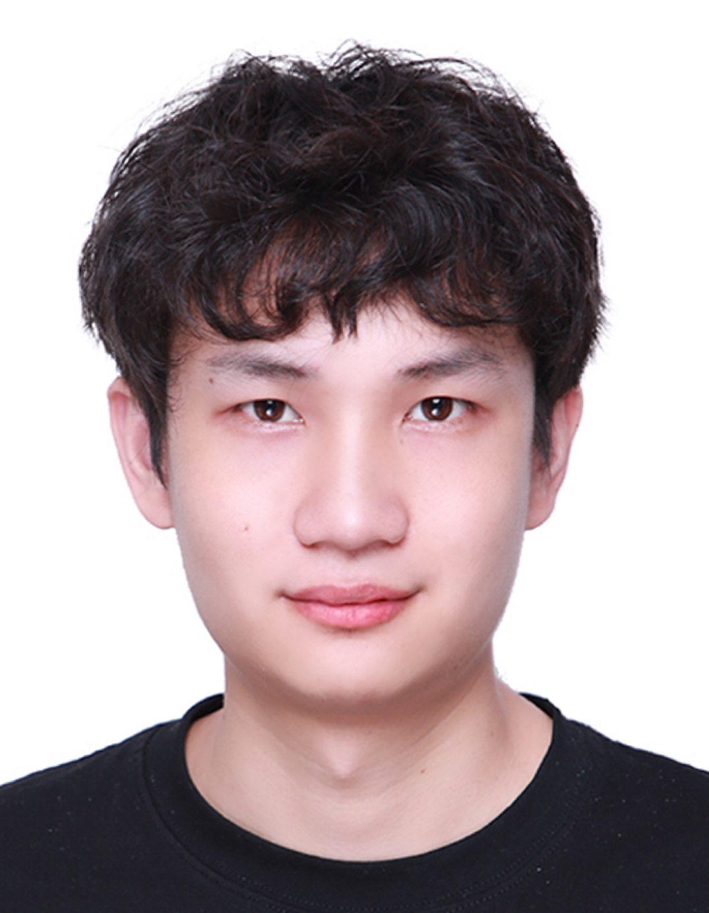
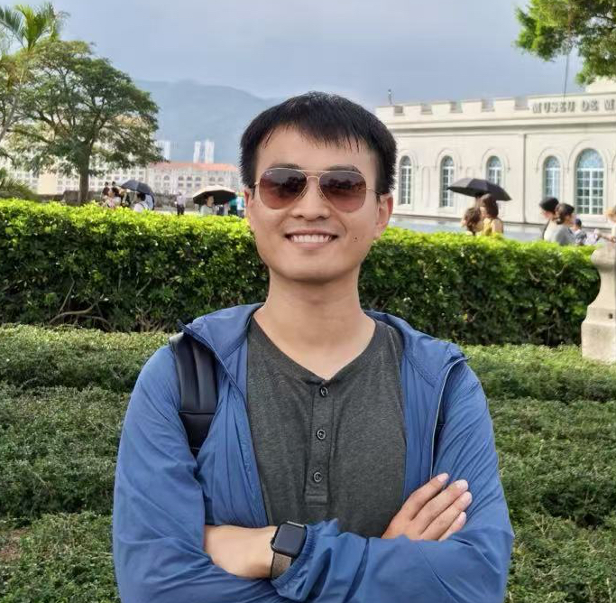
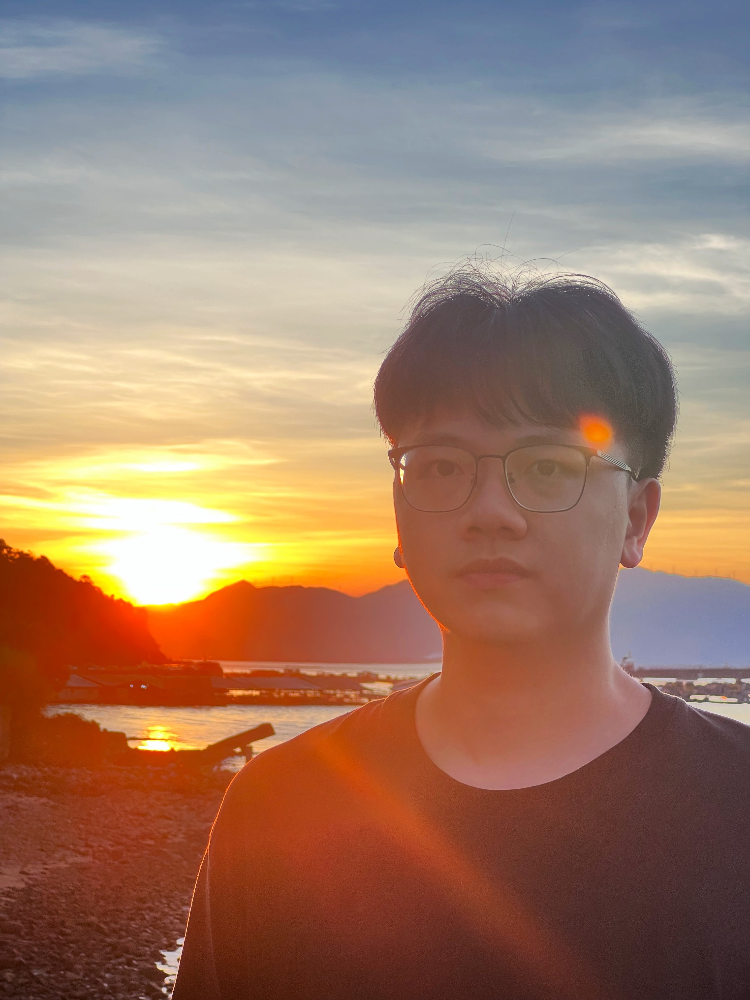
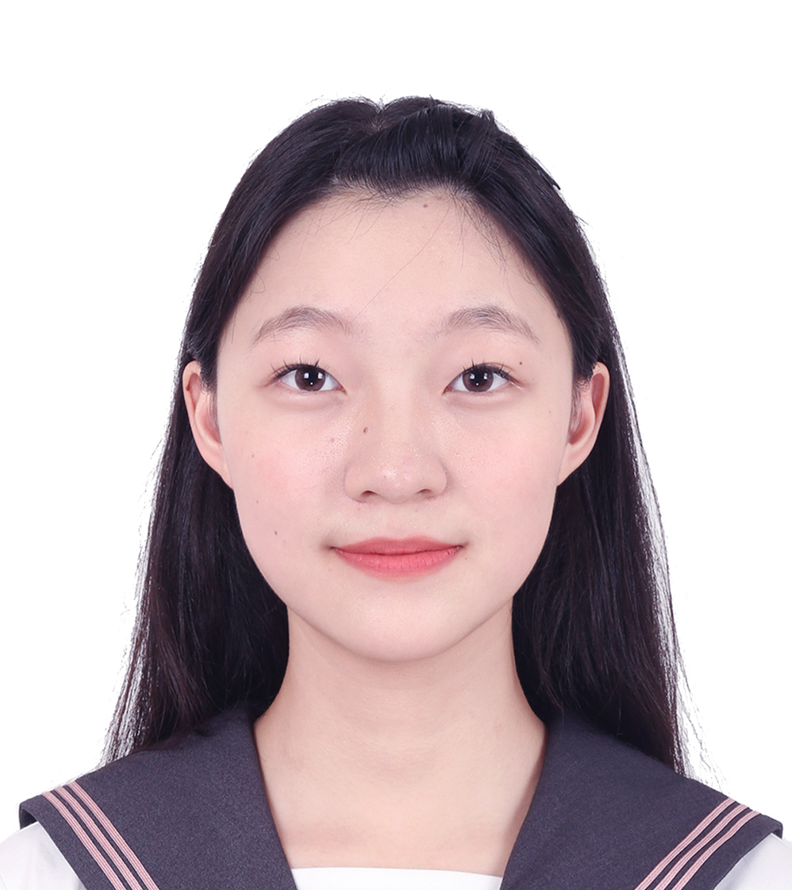
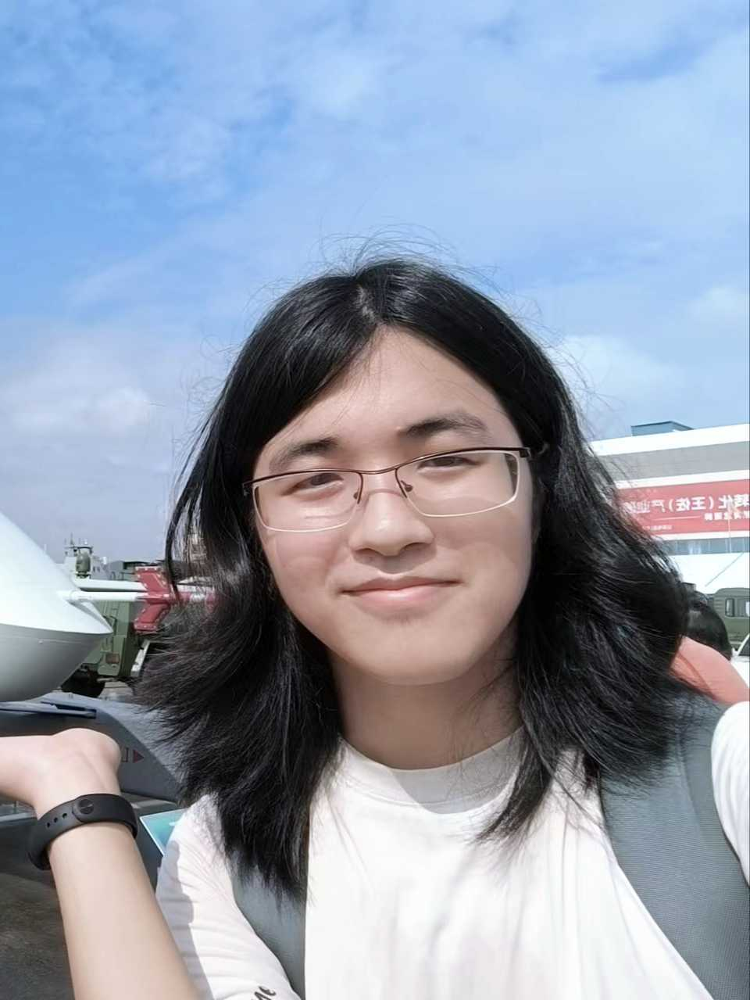
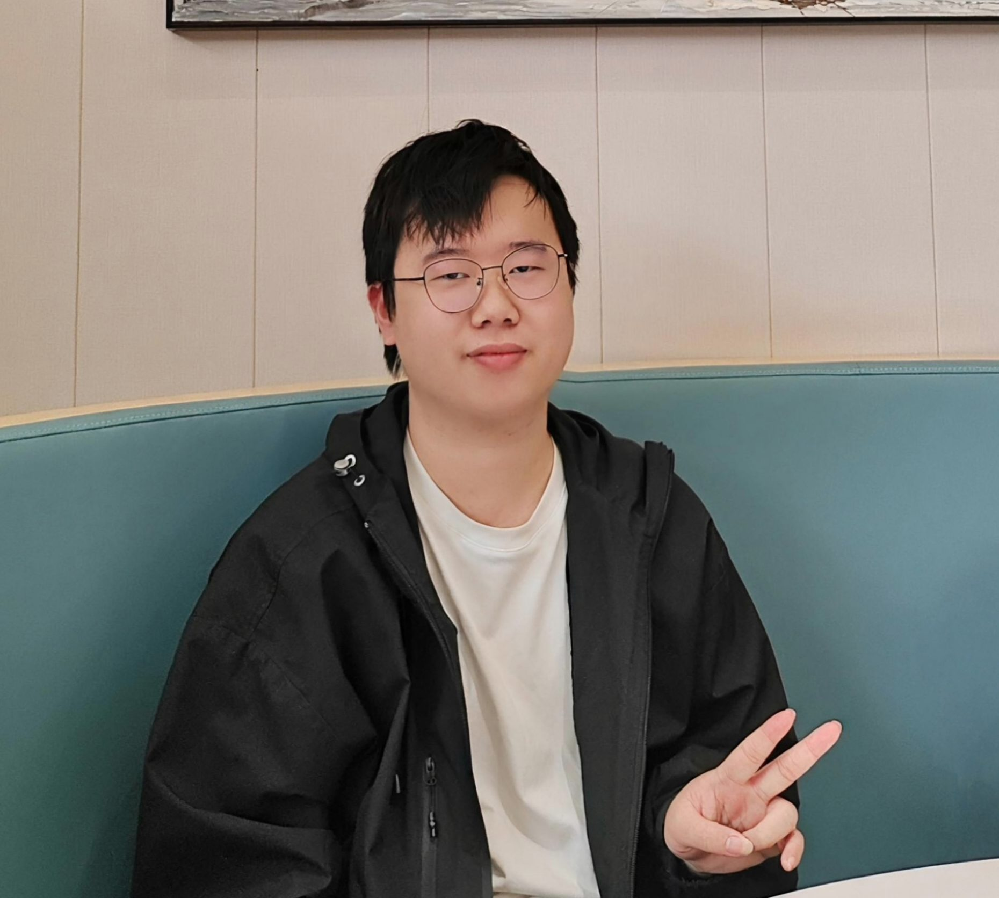

Postdoc
Jiafu Li
李家富
lijiafu@cuhk.edu.cnOffice: Rx618
OUR PEOPLE
Meet the researchers and students behind our work.

PRINCIPAL INVESTIGATOR
Experimental particle physicist working on the direct detection of dark matter, neutrinos and axions using noble liquid detectors.
WORKING TOGETHER

Postdoc
李家富
lijiafu@cuhk.edu.cnOffice: Rx618

PhD Student
戴华煜
huayudai@link.cuhk.edu.cnOffice: Rx618

PhD Student
李宏坤
hongkunli@link.cuhk.edu.cnOffice: Rx618
PhD Student
刘皓昀
haoyunliu@link.cuhk.edu.cnOffice: Rx618

BSc Student
任媛媛
yuanyuanren@link.cuhk.edu.cn
BSc Student
查天源
tianyuanzha@link.cuhk.edu.cn
BSc Student
陈子曦
zixichen@link.cuhk.edu.cnOffice: Rx618
Executive Assistant
程小玲
chengxiaoling@cuhk.edu.cnOffice: TC401b
BEYOND THE GROUP
Meet our former members and see where their journeys continue.